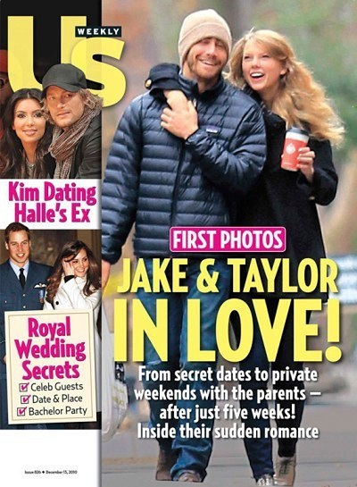

(10 Minute Version)
 (from the vault)
I walked through the door with you
The air was cold
But something about it felt like home somehow
And I, left my scarf there at your sister's house
And you've still got it in your drawer even now

Oh, your sweet disposition
And my wide-eyed gaze
We're singing in the car, getting lost upstate
Autumn leaves falling down like pieces into place
And I can picture it after all these days
And I know it's long gone and that magic's not here no more
And I might be okay but I'm not fine at all
'Cause there we are again on that little town street
You almost ran the red 'cause you were lookin' over at me
Wind in my hair, I was there
I remember it all too well
Photo album on the counter
Your cheeks were turning red
You used to be a little kid with glasses in a twin-sized bed
And your mother's telling stories 'bout you on the tee-ball team
You told me 'bout your past thinking your future was me
And you were tossing me the car keys, "fuck the patriarchy"
Key chain on the ground, we were always skipping town
And i was thinking on the drive down, any time now
Hes gonna say its love, you never called it what it was
Til we were dead and gone and buried
Check the pulse and come back swearing its the same
After three months in the grave
And then you wondered where it went to as i reached for you
But all i felt was shame and you held my lifeless frame
And I know it's long gone and there was nothing else I could do
And I forget about you long enough to forget why I needed to
'Cause there we are again in the middle of the night
We're dancing 'round the kitchen in the refrigerator light
down the stairs, i was there
i remember it all too well
And there we are again when nobody had to know
you kept me like a secret but i kept you like an oath
sacred prayer, and wed swear
to remember it all too well, yeah
Maybe we got lost in translation
Maybe I asked for too much
But maybe this thing was a masterpiece 'til you tore it all up
Running scared, I was there
I remember it all too well
And you call me up again just to break me like a promise
So casually cruel in the name of being honest
I'm a crumpled up piece of paper lying here
'Cause I remember it all, all, all
They say alls well that ends well
but im in a new hell every time you double-cross my mind
you said if we had been closer in age maybe it would have been fine
and that made me want to die
The idea you had of me, who was she?
A never needing ever lovely jewel whose shine reflects on you
Not weeping in a party bathroom
Some actress asking me what happened, you, thats what happened, you
You who charmed my dad with self-effacing jokes
Sipping coffee like you're on a late night show
But then he watched me watch the front door all night, willing you to come
And he said, "its supposed to be fun turning twenty-one"
Time won't fly, it's like I'm paralyzed by it
I'd like to be my old self again
But I'm still trying to find it
After plaid shirt days and nights when you made me your own
Now you mail back my things and I walk home alone
But you keep my old scarf from that very first week
'Cause it reminds you of innocence
And it smells like me
You can't get rid of it
'Cause you remember it all too well, yeah
'Cause there we are again when I loved you so
Back before you lost the one real thing you've ever known
It was rare, I was there, I remember it all too well
Wind in my hair, you were there You remember it all Down the stairs, you were there You remember it all It was rare, I was there I remember it all too well
And i was never good at telling jokes, but the punch line goes
I'll get older but your lovers stay my age
From when your brooklyn broke my skin and bones
Im a soldier who's returning half her weight
And did the twin flame bruise paint you blue?
Just between us, did the love affair maim you too?
Cause in this citys barren cold, i still remember the first fall of snow
And how it glistened as it fell, i remember it all too well
Just between us, did the love affair maim you all too well?
Just between us, do you remember it all too well?
Just between us, i remember it (just between us) all too well
Wind in my hair, i was there, i was there
Down the stairs, i was there, i was there
Sacred prayer, i was there, i was there
It was rare, you remember it all too well
Wind in my hair, i was there, i was there
Down the stairs, i was there, i was there
Sacred prayer, i was there, i was there
It was rare, you remember it
Wind in my hair, i was there, i was there
Down the stairs, i was there, i was there
Sacred prayer, i was there, i was there
It was rare, you remember it
Wind in my hair, i was there, i was there
Down the stairs, i was there, i was there
Sacred prayer, i was there, i was there
It was rare, you remember it